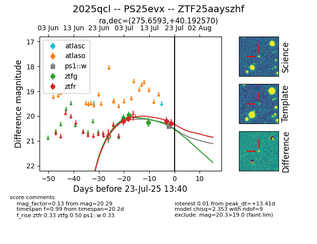

Target ZTF25aayszhf at 2025-07-23 13:40, see:
FINK: fink-portal.org/ZTF25aayszhf
Lasair: lasair-ztf.lsst.ac.uk/objects/ZTF25aayszhf
ALeRCE: alerce.online/object/ZTF25aayszhf
TNS: wis-tns.org/object/2025qcl
YSE: ziggy.ucolick.org/yse/transient_detail/2025qcl
alt names
ZTF25aayszhf (ztf,fink)
2025qcl (tns,yse)
PS25evx (panstarrs)
coordinates:
equatorial (ra, dec) = (275.6593,+40.19257)
galactic (l, b) = (67.9344,+22.30160)
photometry
last ps1::w=20.37, ztfg=20.25, ztfr=20.29
4 ps1::w, 3 ztfg, 4 ztfr detections
